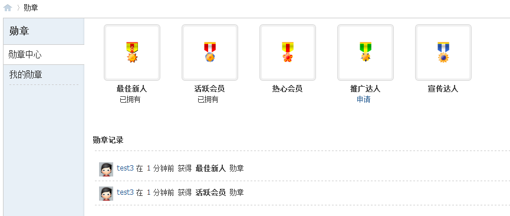
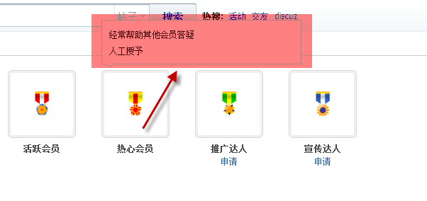
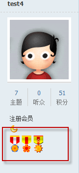

勋章
勋章用来彰显用户在某一方面的特殊贡献，提升用户的形象和知名度，调动用户积极性。根据各勋章的设置的不同领取方式，管理员可以给用户颁发勋章，用户也可以自已申请或者购买
勋章中心
勋章功能需在后台 运营->勋章中心 开启，可用勋章的列表将会显示在此:
将鼠标指到勋章的图标上，将会弹出此勋章的介绍以及如何获取此勋章:
勋章发放方式共有三种：人工发放,即管理人员根据用户表现等情况手动发放勋章；用户申请自动颁发，即用户可申请此勋章，并用金钱等项来购买系统即会将此勋章颁发给用户；用户申请不自动颁发，即用户申请后，管理员在后台审核通过后颁发
若用户已拥有此勋章，将在勋章下方显示“已拥有”字样.发帖时会在用户名片处显示勋章：
